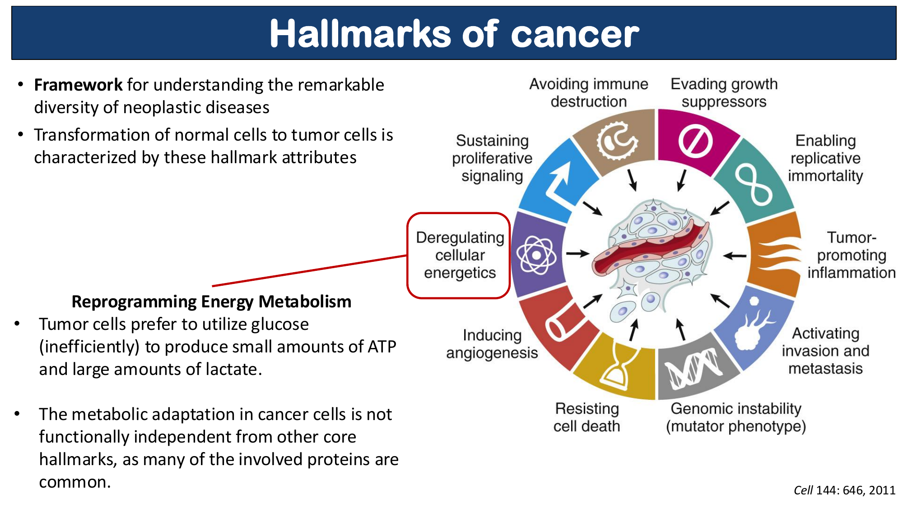

How genetic variation shapes drug response and cancer risk. Includes RAT Mode for PLO-focused exam prep.
Know the distinction between pharmacogenetics (single locus) and pharmacogenomics (many loci), and the clinical "so what."
Foundations
Pharmacogenetics is the study of the genetic basis for variation in drug response. It typically focuses on large effects at a small number of genetic loci. The classic examples are CYP2D6/codeine and MDR1/P-glycoprotein.
Pharmacogenomics examines larger numbers of variants — in an individual or across a population — to explain the genetic component of variable drug responses. These are multifactorial traits (see Week 21), where many variants collectively determine the drug response phenotype. Think of the bell curve: at one locus you get a bimodal distribution; at many loci you get a continuous normal curve.
Codeine is a prodrug — it must be metabolized to morphine by the CYP2D6 enzyme in order to produce pain relief. DNA polymorphisms in the CYP2D6 gene lead to dramatically different outcomes:
| Genotype | Phenotype | Clinical Outcome | Population Frequency |
|---|---|---|---|
| Gene deletion — no CYP2D6 | Poor metabolizer | Little or no pain relief; codeine not converted to morphine | ~10% white; ~0.5% African American & Asian |
| Normal (1–2 copies) | Extensive metabolizer | Standard pain relief | Majority of population |
| Gene duplication (12–16 copies) | Ultra-metabolizer | Rapid conversion → high morphine levels → impaired respiration & sedation | Variable; elevated in some populations |
A standard codeine dose can be toxic in an ultra-metabolizer (e.g., a nursing mother passing excess morphine to her infant) and ineffective in a poor metabolizer. Genetic testing can identify these patients before prescribing.
Q: A patient with a known CYP2D6 gene deletion is prescribed codeine for pain management post-surgery. Why will this patient likely receive no pain relief?
Codeine is a prodrug that requires CYP2D6 to be metabolized into its active form, morphine. Without CYP2D6 (poor metabolizer), the conversion does not occur, and the patient receives no analgesic benefit. A different analgesic not dependent on CYP2D6 should be selected.
Know the progression from normal cell to cancer, the role of TSGs, and why inherited TSG mutations dramatically increase cancer risk.
Cancer Biology
Cancer is not caused by a single mutation — it requires the sequential accumulation of genetic changes. Understanding this progression is critical for appreciating hereditary cancer syndromes like Lynch syndrome.
A normal cell must acquire at least 6–8 driver mutations to become fully invasive and metastatic. Each driver mutation confers a clonal growth advantage, leading to expansion of that cell population.
The colorectal adenoma-carcinoma sequence is the textbook example:

TSGs act as brakes on cell proliferation or as guardians of the genome (like DNA repair genes). Unlike oncogenes (which need only one activating mutation), TSGs must lose both functional copies to lose their protective function.
Individual starts with MSH2+/+ (both alleles normal). Cancer requires two independent somatic hits — very rare in any single cell. Low lifetime risk.
Individual inherits MSH2+/m — already one non-functional allele in every cell. Cancer requires only one additional somatic hit — much more likely. High lifetime risk.
Individuals with an inherited TSG mutation are predisposed to cancer for two reasons: (1) they are already halfway to the 2-hit threshold in every cell of the relevant tissue, and (2) they have far more target cells — the entire colonic epithelium — that each only need one more hit.
Q: With regard to cancer, what type category do DNA repair genes fall into? How many mutations are needed to cause a tumor-driving mutation in a cell?
DNA repair genes are Tumor Suppressor Genes (TSGs). Because both copies must be inactivated (recessive at the cellular level), 2 mutations are needed (the 2-hit hypothesis).
Know which cells carry which mutations and what can be passed to offspring. This is a favorite exam question structure.
Mutation Locations
A birth parent carries a germline MSH2 mutation and passes it to a child:
| Cell Type / Timepoint | MSH2 Genotype | Notes |
|---|---|---|
| All cells at birth | MSH2+/m | One normal, one mutated copy in every cell — inherited germline mutation |
| Normal keratinocyte (head, at age 32) | MSH2+/m | Still heterozygous; no second hit occurred here |
| Colon tumor cells (age 32) | MSH2m/m | Second hit (loss of heterozygosity) occurred in a colon cell → tumor |
| Offspring of this patient | MSH2+/m or MSH2+/+ | 50% chance of inheriting the germline mutation (autosomal dominant predisposition) |
An individual develops a melanoma with an HRAS driver mutation:
| Cell Type | HRAS Genotype | Notes |
|---|---|---|
| Melanoma tumor cells | HRAS mutant | Driver mutation occurred here; clonally expanded to entire tumor |
| Melanocyte in foot (normal) | HRAS normal | Did not arise from the tumor cell lineage; normal somatic cell |
| Offspring of this patient | HRAS normal | Somatic mutation is NOT in germ cells → cannot be inherited |
The question "will the mutation be passed to offspring?" hinges entirely on whether the mutation is in the germline (yes) or is somatic (no). Somatic tumor mutations are locked within the tumor lineage.
Q: An individual has a somatic HRAS mutation in a melanoma. Their foot melanocyte has a normal HRAS gene. If this individual has a child, will the offspring inherit the HRAS mutation?
No. Because the HRAS mutation is somatic (arose in a single skin cell after fertilization), it is not present in the germ cells (sperm or eggs). Therefore, offspring will NOT inherit it. Compare this to Lynch syndrome, where a germline MMR mutation IS present in germ cells and CAN be passed to children.
Pharmacogenetics · Part I
Genetic variation can affect drug response through two main mechanisms: (1) altering the drug's interaction with its target molecule, and (2) altering drug metabolism. Both can have profound effects in tumor cells (somatic mutations) or throughout the entire body (germline variants).
The MDR1 gene (also called ABCB1) encodes P-glycoprotein 1, a transporter that pumps xenobiotics (including many drugs) out of cells — most critically, out of the brain across the blood-brain barrier.
Transports xenobiotics and drugs out of neural tissue, protecting the CNS from toxicity
Reduced transport → increased neural drug concentrations → CNS toxicity
Too much P-glycoprotein pumps chemotherapeutics OUT of tumor cells → treatment resistance in cancer & epilepsy
MDR1 mutations are common in herding breeds (1 in 2 Australian Shepherds are carriers). The mutations display incomplete dominance. Roger, a Lab/Chow/Husky rescue dog, illustrates the benefit of DNA testing before administering any of these drugs:
Low-dose safe; avoid in MDR1 mutants at standard doses
CNS toxicity risk in MDR1 mutants
P-gp substrate; adjust dose for MDR1 status
Increased neural concentration risk
CNS penetration risk; reduce dose in carriers
Q: Roger the dog is heterozygous (MDR1+/m) for a loss-of-function MDR1 mutation and needs an anesthetic known to interact with P-glycoprotein. How would you alter the dose?
Decrease the dose. With incomplete dominance, heterozygotes have reduced P-glycoprotein function compared to normal — less drug is pumped out of the CNS → higher neural concentrations → increased risk of toxicity at standard doses. A reduced dose achieves the same therapeutic effect safely.
The same principle applies in humans. Overexpression of ABCB1 in tumor cells or CNS cells actively pumps therapeutic drugs out, leading to treatment resistance in:
Q: An 8-year-old presents with a neuroblastoma in the right brain hemisphere. Post-resection gene expression analysis shows increased ABCB1 (MDR1) expression. How would this influence chemotherapeutic dosing?
Increase the dose. Overexpression of ABCB1/P-glycoprotein actively pumps the chemotherapeutic drug OUT of tumor cells, reducing intracellular drug concentration. A higher dose is needed to overcome this efflux and maintain therapeutic levels within the tumor cells. This is a primary mechanism of chemotherapy resistance in brain tumors.
Pharmacogenetics · Part II
This is perhaps the highest-yield section for both the Progress Test and boards. Dr. Becker has explicitly used Warfarin as a case on the Progress Test. The framework learned here applies to any drug — not just warfarin.
Genetic variation can: (1) alter drug–target affinity, or (2) alter drug metabolism. Each scenario has a predictable consequence for dosing. Memorize the direction of each change.
Warfarin binds to VKORC1 (Vitamin K epoxide reductase complex 1) and inhibits it. Without active VKORC1, Vitamin K cannot be recycled, and the carboxylase enzyme cannot activate clotting factors II, VII, IX, and X. The result: reduced clotting (anticoagulation).
Warfarin → inhibits VKORC1 → blocks Vitamin K recycling → carboxylase cannot activate precursor prothrombin → reduced active clotting factors (II, VII, IX, X) → anticoagulation
Note: S-warfarin (metabolized by CYP2C9) is 3–5× more potent than R-warfarin (metabolized by CYP2C19/1A2/3A4). Metabolites of warfarin do NOT affect VKORC1 — it is not a prodrug.
Amino acid side chains surround warfarin in the VKORC1 binding site. A missense mutation in any of these residues can alter the affinity of warfarin for the protein:
| Mutation Effect on VKORC1 | Effect on Warfarin Binding | Therapeutic Consequence | Dose Adjustment |
|---|---|---|---|
| Increases affinity by 50% | Warfarin binds tighter → more effective inhibition | Standard dose over-anticoagulates → dangerous bleeding risk | ⬇️ DECREASE dose |
| Decreases affinity by 50% | Warfarin binds less tightly → less effective inhibition | Standard dose under-anticoagulates → clotting risk | ⬆️ INCREASE dose |
| Minimizes interaction | Virtually no binding → no therapeutic effect | No benefit at any dose; increasing dose adds toxicity without benefit | 🔄 SWITCH medication |
If warfarin–VKORC1 interaction is minimized, which alternative should you choose?
Genetic variants in CYP enzymes affect how quickly warfarin itself is broken down. Unlike codeine, warfarin is not a prodrug — its metabolites do NOT inhibit VKORC1.
| Mutation Effect on Metabolism | Warfarin Concentration | Clinical Consequence | Dose Adjustment |
|---|---|---|---|
| Increased metabolism (broken down faster) | Lower circulating warfarin | Drug cleared too quickly → insufficient anticoagulation | ⬆️ INCREASE dose |
| Decreased metabolism (broken down slower) | Higher circulating warfarin | Drug accumulates → over-anticoagulation → bleeding risk | ⬇️ DECREASE dose |
For warfarin (not a prodrug): faster metabolism → lower active drug → increase dose. For codeine (a prodrug): faster metabolism → more active morphine → decrease dose or risk toxicity. Always determine whether you're dealing with a prodrug before reasoning through metabolic scenarios.
Q: A patient has a VKORC1 mutation that minimizes warfarin binding. What medication strategy would you employ, and what category of drug might you consider?
Switch medications. Since warfarin has little-to-no affinity for the mutated VKORC1, increasing the dose provides no benefit and only increases toxicity risk. The best alternatives are: (B) a drug targeting a different binding site on VKORC1, or (C) a drug targeting a different molecule altogether in the coagulation cascade. Option A (same binding site) is least preferred because the structural change may impair all ligands at that site.
Q: A patient carries a CYP2C9 polymorphism that reduces S-warfarin metabolism by 70%. How does this affect dosing, and why is the clinical risk significant?
Decrease the dose. Reduced CYP2C9 activity means S-warfarin (the more potent isomer, 3–5× R-warfarin) is cleared much more slowly, leading to drug accumulation. This creates a risk of life-threatening bleeding. A standard dose in this patient would be equivalent to a massive overdose in a normal metabolizer. Genetic testing for CYP2C9 variants is now standard practice before initiating warfarin therapy.
Pharmacogenetics · Part III
Lynch Syndrome (Hereditary Non-Polyposis Colorectal Cancer, HNPCC) is an inherited genetic disorder caused by inactivating mutations in DNA mismatch repair (MMR) genes — specifically MLH1, MSH2, MSH6, PMS2 — OR by mutations in the EPCAM gene that epigenetically silence MSH2.
MMR proteins work in the G2 phase of the cell cycle to identify and repair single base-pair mismatches that escape proofreading during DNA replication. The process:
Mutations in any of these MMR genes eliminate or impair this repair process, leading to accumulation of replication errors — especially in microsatellite regions.
| Gene | Chromosomal Location | Function |
|---|---|---|
| MLH1 | 3p22.2 | Mismatch repair; recruits repair complex |
| MSH2 | 2p21–16 | Mismatch recognition (pairs with MSH6) |
| MSH6 | 2p16.3 | Mismatch recognition (pairs with MSH2) |
| PMS2 | 7p22.1 | Mismatch repair endonuclease |
| EPCAM | 2p21–p16.3 | Epithelial cell adhesion molecule; 3' deletions → epigenetic silencing of MSH2 promoter by DNA methylation |
EPCAM and MSH2 are both located on chromosome 2p21–p16.3. Large 3' deletions in EPCAM extend into the MSH2 promoter region, causing epigenetic silencing via DNA methylation — effectively acting as a "second-hit" on MSH2 expression through an epigenetic mechanism rather than a classic DNA mutation.
All causative genes map to autosomes (chromosomes 2, 3, 7) — not sex chromosomes. Lynch syndrome displays autosomal dominant inheritance.
While a mutation in both alleles is necessary to actually lose MMR function in a cell (recessive at the cellular level), the predisposition for cancer is inherited in a dominant manner with reduced penetrance. Heterozygous carriers (MSH2+/m) are at dramatically elevated cancer risk compared to the general population because they only need one more somatic "hit" in any colon cell.
Lynch syndrome can result from mutations in any one of several different genes (MLH1, MSH2, MSH6, PMS2, or EPCAM). This is the definition of locus heterogeneity: different gene mutations leading to the same disease.
| Genetic Concept | Definition | Lynch Connection |
|---|---|---|
| Locus Heterogeneity | Mutations in different genes → same disease phenotype | ✅ MLH1 OR MSH2 OR MSH6 OR PMS2 → Lynch syndrome |
| Allelic Heterogeneity | Multiple different mutations in one gene → same disease | Technically also present, but not the defining feature here |
| Pleiotropy | One gene → multiple independent phenotypes | ❌ Not the right answer for this question |
| Penetrance | Proportion of genotype carriers showing phenotype | Related (reduced penetrance), but not the "heterogeneity" concept |
Microsatellites are 2–6 bp sequences repeated many times throughout the genome (e.g., CACACACACACA…). These repetitive regions are prone to polymerase slippage during replication, which generates mismatches that MMR normally corrects. When MMR is defective:
Two screening approaches are used on tumor tissue, then confirmed by germline testing:
Tests for the presence or absence of MMR proteins in tumor cells. In Lynch syndrome tumors, the affected MMR protein is absent (no staining). Normal somatic cells would still show positive staining for all MMR proteins (they retain one functional allele).
PCR-based comparison of microsatellite repeat lengths in tumor vs. normal tissue. Lynch syndrome tumors show different-length microsatellites compared to normal tissue (MSI-High). Normal cells show stable, matched microsatellite lengths.
In a Lynch syndrome patient (MSH2+/m), IHC of the colon tumor will show absent MSH2 protein (MSH2m/m — both copies inactivated). IHC of a normal skin biopsy from the same patient will show present MSH2 protein (MSH2+/m — one functional copy remains). This discordance between tumor and normal tissue is the diagnostic hallmark.
Q: What pattern of inheritance does Lynch syndrome display, and how can mutations in MLH1, MSH2, MSH6, and PMS2 all cause the same disease?
Autosomal dominant (with reduced penetrance). All causative genes are on autosomes, and one inherited mutant allele is sufficient to create a predisposition to cancer, even though two hits are needed for tumor formation. The fact that mutations in several different genes all produce Lynch syndrome is an example of locus heterogeneity — different loci, same disease phenotype.
Q: In a patient with Lynch syndrome (MSH2+/m), how does the genotype of the colon tumor cells compare to (a) normal keratinocytes in the scalp and (b) the patient's offspring?
(a) Colon tumor cells: MSH2m/m — a second somatic "hit" inactivated the remaining functional allele (loss of heterozygosity). (b) Normal keratinocytes: MSH2+/m — still carry the inherited mutation but never acquired a second hit, so they retain one functional copy. (c) Offspring: 50% chance of MSH2+/m — since this is a germline mutation, it can be transmitted in an autosomal dominant pattern.